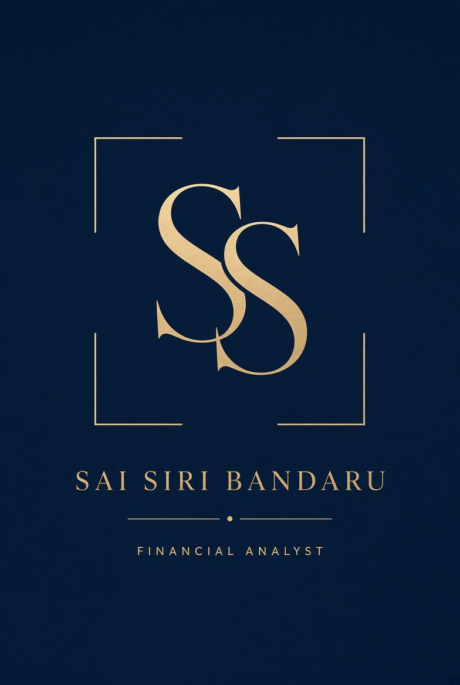

Illustrative reconstruction — not confidential employer figures.
Financial Analyst at PNC · FP&A · Operations Finance
Sai Siri Bandaru
Variance packs and forecasts that operators can run the week on.
MS Business Analytics and MBA Finance. I partner with operations to explain volume and cost movement, reforecast staffing, and put a defendable number on capital asks.

4+ yrsFP&A-style analysis across banking and operating businesses
2%Throughput lift supported at PNC through process and cost work
MS + MBABusiness Analytics and Finance — dual quantitative stack
Full stackExcel · Power BI · Tableau · NetSuite · SAP / Oracle
Positioning
The analyst between operations and the P&L.
Most FP&A decks explain what happened. Recruiters and finance leaders need someone who can also say why volume moved, what it means for staffing next quarter, and which lever to pull.
I currently support operations finance at PNC Financial Services. Before that I owned budget-variance packs and tuition/scholarship forecasts at upGrad, ran sales-side MIS and working-capital analysis at BYJU’S, and produced leadership EBITDA and leverage reporting at BSNL.
The through-line is the same: take messy operational data, put it in a controlled model, and hand executives a clean story with numbers they can defend.
Variance analysis
Forecasting & reforecasts
KPI design
DCF / NPV / IRR
Month-end reporting
Executive dashboards
Selected work
Four problems I am hired to solve.
Open a case, then toggle between the reconstructed pack and a live model of the same story. Outcomes stay limited to my professional record.
Toolkit
How I actually work.
FP&A core
- Budget vs. actual and prior-period variance
- Driver-based forecasting and quarterly reforecasts
- KPI design and target tracking
- Month-end close packs and reporting controls
- Staffing and resource modeling
Valuation & commercial
- DCF, NPV, IRR
- ROI and payback
- Scholarship / discount and pricing models
- Working capital (AP/AR) diagnostics
- Margin and capacity MIS
Systems & visualization
- Advanced Excel (lookups, nested formulas, pivots)
- Power BI and Tableau
- Oracle NetSuite, Banner, SAP, Oracle ERP
- Executive dashboarding for non-finance users
- Reporting automation and template standardization
Experience
Where the work was done.
Jun 2025 — Present
Financial Analyst · PNC Financial Services
Operations finance partner: throughput and unit-cost improvement, executive KPIs, production-volume models, monthly variance commentary, quarterly staffing reforecasts, month-end template standardization.
Apr 2022 — Jul 2023
Financial Analyst · upGrad
Budget-vs-actual packs, tuition / auxiliary / scholarship forecasts, NetSuite and Banner automation, Power BI and Tableau for operators, NPV/IRR on capital projects, grant compliance support.
Jan 2021 — Mar 2022
Sales Analyst · BYJU’S
Department budgets, standard-cost variance, AP/AR and working capital, ROI and payback, dynamic pricing, monthly MIS on margin and capacity.
Jan 2019 — Aug 2019
Junior Financial Analyst · BSNL
Overhead and labor variance, daily cash for procurement and CAPEX, EBITDA and leverage MIS, SAP / Oracle extraction.
Education & honors
Credentials behind the models.
M.S. Business Analytics
August 2023 — May 2025
MBA, Accounting & Finance
July 2018 — December 2020
Bachelor's, Accounting & Finance
August 2015 — May 2018
Inducted Member — Beta Gamma Sigma
Merit Scholarship — Academic Excellence Award
Languages: English · Telugu · Hindi